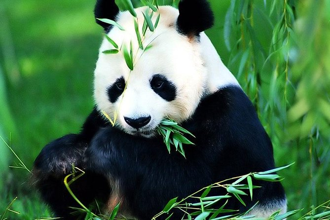

We kennen ze allemaal wel, de lieve en pluizige panda's! Zichzelf volproppen slapen en schattig zijn. Daarmee worden panda's meestal geassocieerd, maar hoe zit het nou echt met de dieren?

De panda is een zeldzame berensoort die hoog in de bergen van westelijk China leeft in bamboebossen. Niet zonder reden: ze eten namelijk bijna alleen maar bamboe, tussen 12 en 40 kg per dag. Panda's leven aardig op zichzelf. Bovenin kunt u een selectie maken waarover u meer te weten wilt komen.